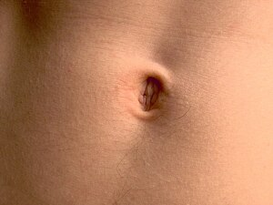

ϩ(ⲉ)ⲗⲡⲉ S, ϩⲏⲗⲡⲓ Sf, ϩⲗⲡⲉ A2, ϧⲉⲗⲡⲓ, -ⲃⲓ B, ϩⲉⲗⲡⲓ, -ⲉ O nn f, navel: Job 40 11 SB, cit Br 267, ShA 1 396 S, MG 25 114 B, Cant 7 3 S ὀμφαλός; Lev 3 9 B ⲡⲉⲧⲥⲁⲡⲉⲥⲏⲧ ⲛϯϧ. (S ϯⲡⲉ) ὀσφύς; AZ 21 100 O ⲑⲉⲗⲡⲓ (gloss -ⲉ) ⲛⲑⲏ, BM 178 S ⲑ. of Virgin is baptismal font, R 2 1 71 S ⲟⲩϩ. ⲉⲛⲉⲥⲱⲥ ⲉⲥϣⲧϣⲱⲧ, Mor 51 11 Sf ⲧⲉϥϩ., ib S, MG 25 89 B as high as ⲧⲉϥϧ. = Gött ar 114 22 الى نصف قامته, MIE 2 348 B ⲁⲧⲉⲥϧⲉⲗⲃⲓ ⲫⲱϧ, Mani K 90 A2 ⲧⲉϥϩ., BKU 1 1 vo S ⲡϣⲙⲧϣⲉ ⲛⲙⲟⲩⲧ ⲉⲧⲕⲟⲧⲉ ⲉⲧϩ. In name: Παθέλπε (Preisigke).
(noun feminine)
anatomy
navel [ομφαλος, οσφυς]

complete
630a
ϧⲉⲗⲃⲓ v ϩⲗⲡⲉ.
ϧⲉⲗⲡⲓ v ϩⲗⲡⲉ.
671a